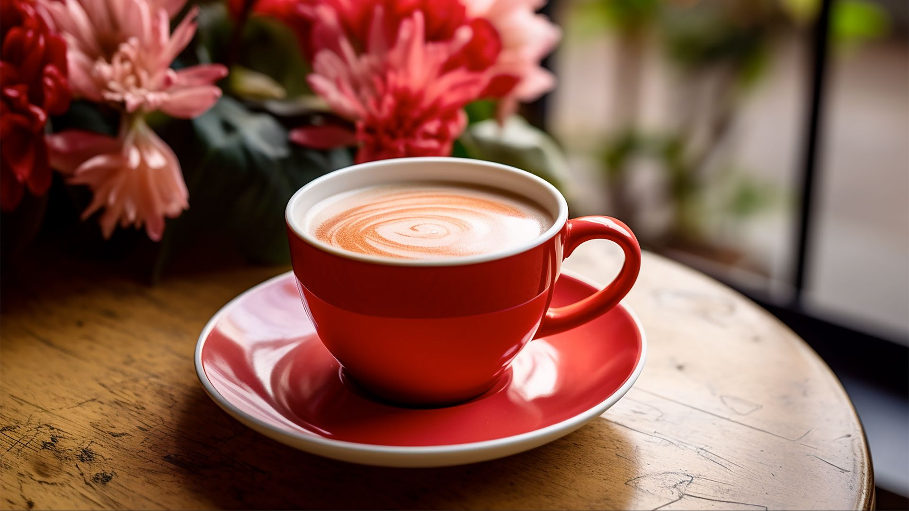
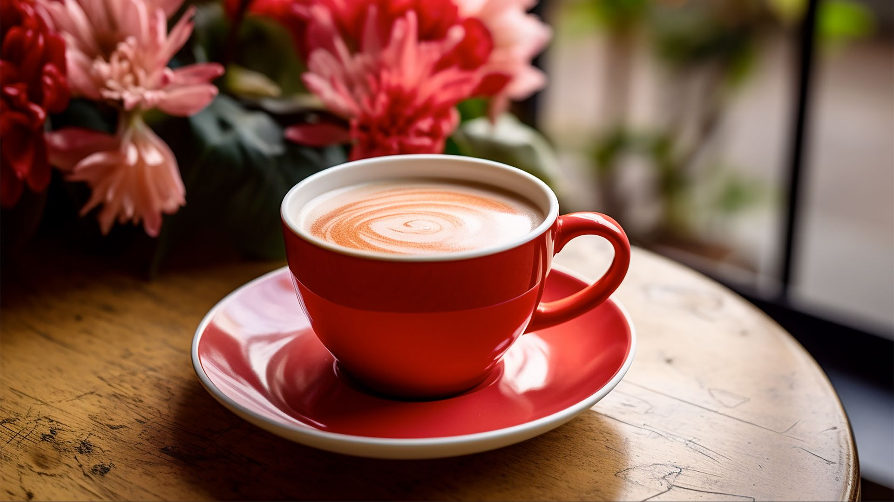

The history of coffee is as rich and varied as the drink itself. Coffee's origins trace back to Ethiopia around the 9th century. According to legend, a goat herder named Kaldi noticed his goats became particularly energetic after eating berries from a certain tree—these were coffee cherries. By the 15th century, coffee had made its way to the Arabian Peninsula. The first known coffee houses, known as qahveh khaneh, appeared in Yemen.
Types of Coffee

 

Cappuccino
Information
Cappuccino is an Italian coffee drink that is traditionally prepared with equal parts espresso, steamed milk, and milk foam. It’s typically served in a small, porcelain cup to retain the heat. The name "cappuccino" comes from the Capuchin friars, referring to the color of their robes, which is similar to the color of the beverage when milk is added in small portions to dark, brewed coffee.
Americano
Information
Americano is made by diluting a shot of espresso with hot water. This results in a coffee that has a similar strength to drip coffee but retains the rich and robust flavor of espresso. Typically, the ratio is one part espresso to two parts hot water, but this can be adjusted to taste.
Espresso
Information
Espresso is made by forcing a small amount of nearly boiling water through finely-ground coffee beans under high pressure. The process extracts a high concentration of flavors, oils, and caffeine, resulting in a dense, flavorful shot.
Latte
Information
A latte, also known as a caffè latte, is a popular coffee drink that originated in Italy. The word "latte" means milk in Italian, which is fitting because a latte is made with espresso and steamed milk.
Mokiato
Information
A latte, also known as a caffè latte, is a popular coffee drink that originated in Italy. The word "latte" means milk in Italian, which is fitting because a latte is made with espresso and steamed milk.